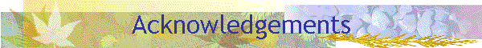

Home | PSI RAS | RCIS | S-Tree Lib

|
 Home | PSI RAS | RCIS | S-Tree Lib
|
|
I started to work on the problem of Maintaining Dynamic
Dictionaries with Variable Length Keys in 1990. Since that time there was a lot of people
that I discussed different issues of the problem with. I'm grateful to all of them.
I'm thankful to all my colleagues the present, and the former employees of the Research Center for Information Systems PSI RAS. Here is a set (an un-ordered collection) of people I'm personally thankful to for the help in my research
I'm thankful to Elena A. Zinovieva for the help on the implementation stage of the project. |
|
Konstantin Shvachko: |